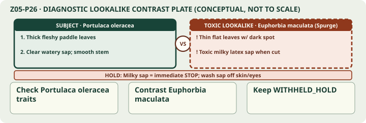

Z05-P26 · Wild foods and poisonous lookalikes · New manuscript
Common Purslane (Portulaca oleracea) vs Toxic Spotted Spurge
Document diagnostic traits of Portulaca oleracea and contrasting lookalikes under permanent consumption HOLD.
When it applies · Sunny dry disturbed soils, garden paths; Summer (Prostrate succulent mat).
Equipment · Flora key, 10x hand lens, metric ruler, notebook.

Actions
- Verify Portulaca oleracea (L.; syn. Little hogweed) via Bell Museum Herbarium and USDA PLANTS: Thick fleshy paddle-shaped smooth leaves on reddish succulent stems with completely clear watery sap; tiny 5-petaled yellow flowers opening in sun.[B01, B03, B10, B20]
- Exclude lookalikes (Euphorbia maculata (prostrate spotted spurge — toxic milky latex)); reject on: White milky sap when broken; thin flat opposite leaves often with dark central purple blotch; hairy stems.[B01, B03, B10, B20]
- Separate recognition from eating (Spurge milky latex causes severe skin or eye irritation and GI toxicity; purslane has high oxalates; consumption withheld); obey non-SNA and clean-site rules under WITHHELD_HOLD.[B19, B21, B24]
Failure recognition · Single-trait guessing or common names confuse Portulaca oleracea with Euphorbia maculata, risking poisoning.[B03, B10, B24]
Verify · Binomial, multi-trait key match, lookalike exclusions, season and habitat, and WITHHELD_HOLD status are logged.[B02, B20, B24]
Stop or change course · Stop if any key trait is missing or ambiguous; call Minnesota Poison Control (1-800-222-1222) or 911 on suspected ingestion.[B09, B24]
Evidence and editorial notes
- B01 · Bell Museum (UMN) · Minnesota Biodiversity Atlas (Current web edition)
- Section: Minnesota Biodiversity Atlas regional occurrence and specimen data · Conditions: Documenting regional plant and fungal distribution in Minnesota
Support: Regional atlas records establish verified county-level occurrences and phenology windows for Minnesota plants and fungi.
Limitations: Occurrence maps confirm regional presence only; they never confirm a field specimen identity or consumption suitability. · Conflicting evidence: None noted.
Editorial note: Anchors Z05 Minnesota regional taxonomy. · Specialist reviewer: Bell Museum / regional botanist
Primary source · checked 2026-11-25 - B02 · Bell Museum (UMN) · Bell Museum Specimen Collections Portal (Current web edition)
- Section: Curated herbarium and fungarium voucher specimen standards · Conditions: Corroborating species traits against documented physical vouchers
Support: Curated herbarium and fungarium vouchers link accepted scientific names, collection locality, habitat, and morphology to verifiable specimens.
Limitations: Image-search labels and crowd-sourced guesses cannot substitute for vouchered keys and qualified taxonomic review. · Conflicting evidence: None noted.
Editorial note: Core P19-A voucher discipline. · Specialist reviewer: Herbarium / fungarium curator
Primary source · checked 2026-11-25 - B03 · USDA NRCS · PLANTS Database: Accepted Taxa and Regional Distribution (Current web edition)
- Section: Accepted botanical nomenclature, authorities, and synonyms · Conditions: Standardizing plant scientific names across regional floras
Support: Tracking accepted Latin binomials, taxonomic authorities, and legacy synonyms prevents dangerous common-name confusion.
Limitations: Common names like hemlock, nightshade, elder, or wild carrot refer to unrelated toxic and non-toxic taxa across regions. · Conflicting evidence: None noted.
Editorial note: Prevents common-name misidentification. · Specialist reviewer: Plant taxonomist
Primary source · checked 2026-11-25 - B09 · Minnesota Poison Control System · Poison Help 1-800-222-1222 and Regional Plant/Mushroom Guidance (Current web edition)
- Section: Minnesota Poison Control 1-800-222-1222 immediate referral · Conditions: Any suspected toxic plant, berry, root, or mushroom ingestion or severe dermal exposure
Support: Call 1-800-222-1222 immediately (or 911 for breathing difficulty, collapse, seizures, or altered alertness); do not wait for delayed symptoms.
Limitations: Never induce vomiting or administer home remedies unless explicitly instructed by Poison Control or EMS. · Conflicting evidence: None noted.
Editorial note: Mandatory Z05 poison-response escalation. · Specialist reviewer: Clinical toxicologist / Poison Center
Primary source · checked 2026-11-25 - B10 · National Capital Poison Center · Poisonous Plants and Berries Overview (Current web edition)
- Section: Poisonous plants, berries, and dose-dependent pediatric risk · Conditions: Household, trailside, and wild berries, seeds, and foliage
Support: Many attractive wild berries, seeds, and roots contain cardiac glycosides, alkaloids, or oxalates that cause rapid toxicity, especially in children.
Limitations: Never sample unknown plants; recognition and consumption suitability remain separate decisions. · Conflicting evidence: None noted.
Editorial note: Separates recognition from consumption. · Specialist reviewer: Clinical toxicologist and botanist
Primary source · checked 2026-11-25 - B19 · Minnesota DNR · Terrestrial Invasive Plants and Toxic Lookalikes (Current web edition)
- Section: Terrestrial invasive species and roadside contamination hazards · Conditions: Disturbed corridors, edges, and utility rights-of-way
Support: Roadsides and invasive-dominated corridors are frequently sprayed with herbicides and accumulate runoff metals and road salts.
Limitations: Never collect food plants from roadsides, industrial lots, sprayed corridors, or contaminated floodplains even if species identity is certain. · Conflicting evidence: None noted.
Editorial note: Separates species ID from site-contamination safety. · Specialist reviewer: Environmental health and botanist
Primary source · checked 2026-11-25 - B20 · USDA Forest Service · Celebrating Wildflowers: Plant Identification and Conservation (Current web edition)
- Section: Botanical morphology terminology and multi-character keys · Conditions: Observing leaf venation, margins, flower symmetry, and fruit anatomy
Support: Accurate plant identification requires confirming multiple independent morphological characters at the observed life stage.
Limitations: Missing flowers, fruit, or underground parts require stopping identification rather than guessing. · Conflicting evidence: None noted.
Editorial note: Enforces multi-feature identification standard. · Specialist reviewer: Plant taxonomist
Primary source · checked 2026-11-25 - B21 · USDA Forest Service · Ethnobotany, Wild Foods, and Conservation Precautions (Current web edition)
- Section: Ethnobotanical limits, preparation hazards, and permit rules · Conditions: Wild plant/fungus gathering ethics and toxicity processing limits
Support: Some traditionally used plants contain raw toxins (cyanogenic glycosides, oxalates, tannins, alkaloids) that require verified preparation or remain unsafe for sensitive groups.
Limitations: Historical ethnobotanical mentions are never modern clinical safety clearances; maintain consumption status WITHHELD until qualified review. · Conflicting evidence: None noted.
Editorial note: Enforces recognition-vs-consumption separation. · Specialist reviewer: Ethnobotanist and food toxicologist
Primary source · checked 2026-11-25 - B24 · CDC MMWR · Notes from the Field: Severe Mushroom Poisoning — Minnesota 2018 (MMWR 68(21))
- Section: Rejection of folklore edibility tests and AI-only visual clearance · Conditions: All wild plant, berry, root, and fungal screening
Support: Universal skin/lip rub tests, silver-spoon tests, animal-browsing observations, single photos, and generated illustrations never establish edibility.
Limitations: If any diagnostic feature, site-contamination history, or expert review is missing, consumption remains strictly WITHHELD. · Conflicting evidence: None noted.
Editorial note: Enforces Z05 fail-closed edibility rule. · Specialist reviewer: Botanist, mycologist, and clinical toxicologist
Primary source · checked 2026-11-25
Source lineage · New manuscript (Z05 P19-C regional atlas) · Classification · New manuscript.